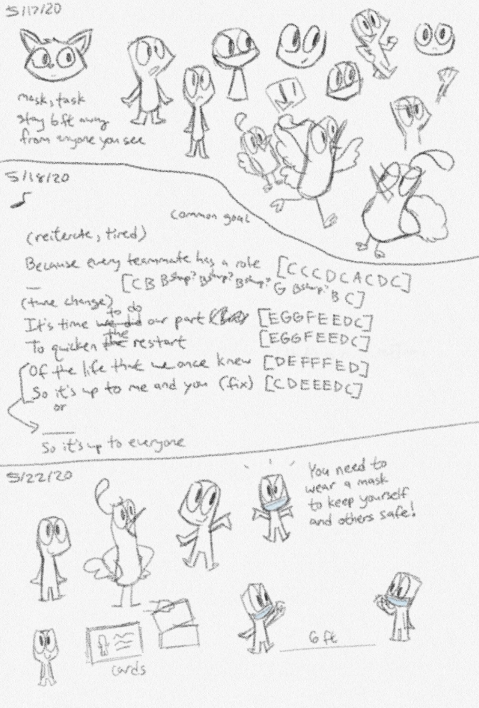
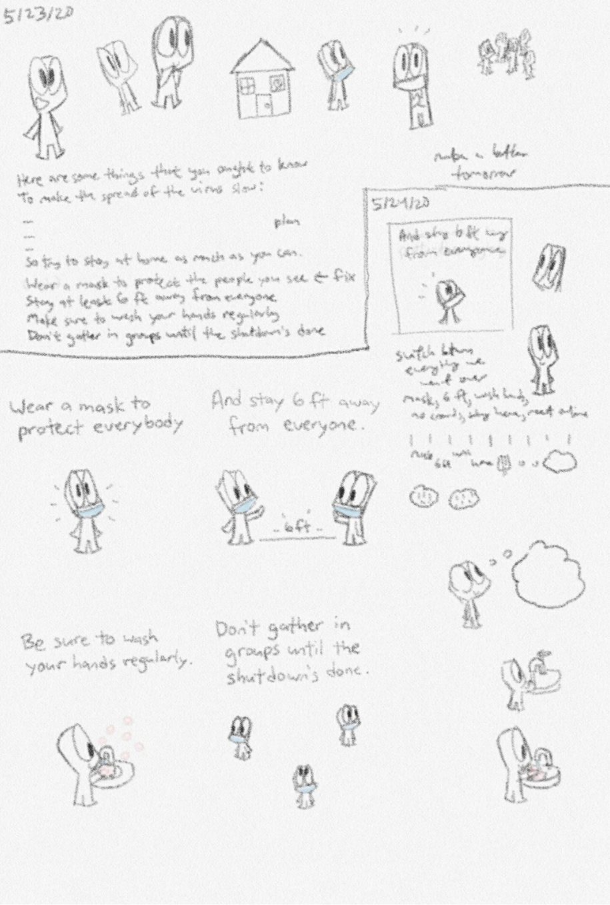
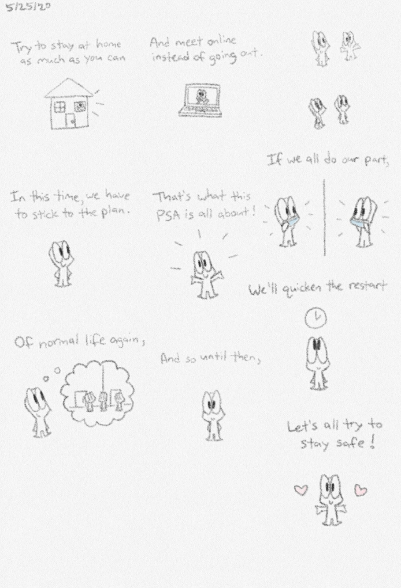
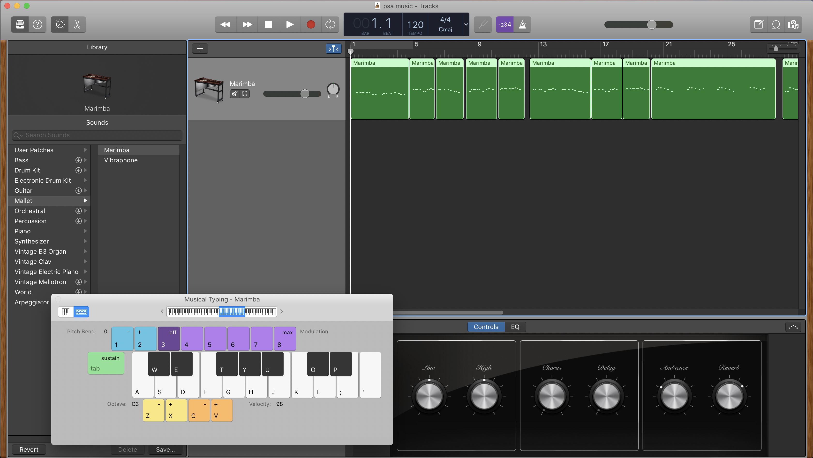

This was created for a COVID-19 Social Media PSA Campaign at NYU. Out of 19 entries, my PSA was selected as one of the top 5. See NYU's news story on the top 5 entries here.
The COVID-19 Social Media PSA Campaign asked NYU students and alumni to create one-minute PSAs backed by science in order to help expand knowledge, attitudes, and behavior among Gen Z about COVID-19. See more details about the campaign here.
The campaign required you to use at least one of the research-driven prompts and insights given. I chose to use the insight "Encourage friends and family to stay inside when possible, wash hands frequently, wear a mask, avoid crowds, and maintain six-foot social distancing measures," which was part of the prompt to change behavior. That insight included several safety tips, so I thought that I could maybe do an animated video with rhyming lyrics.

I made doodles of the character I used in the video, along with other possible ideas such as a cat and a bird. I decided to use the human-like character because people could identify with it more than a cat or a bird (especially since birds can't really wear masks).
I also started writing down ideas for the rhyming lyrics, along with the piano keys for the melody. I'm not an expert in music writing at all (as evidenced by the part in the above picture where I wrote "B sharp" when I meant "B flat"). Usually, a melody idea will pop up in my head and I'll then have to try to figure out what sequence of piano notes matches what I'm thinking of. I didn't really use much of what I wrote up there in the PSA, but it helped me think about what kind of lyrics to have.
I still wasn't really sure on what the video should be. At one point, I had the idea of using note cards with non-rhyming safety tips on them and just flipping through them. I ended up sticking to the idea of an animated video with a rhyming song, but the note card idea helped make the style of the PSA more hand-drawn.
Because I needed the rhyming lyrics done before I could do anything else, I started working on how to organize the safety tips into a less-than-one-minute song that made sense. I would write a line about one tip, think of words that rhymed with the last word, and then see if I could find a way to write a line about a different tip using one of those rhyming words.
 
Once I had all the lyrics written and organized, I started to work on doing the drawings for the PSA. I decided to draw them in the Samsung Notes app because I had been drawing everything else in there. It also gave it more of a hand-drawn look. I wanted to draw two separate versions of the same drawing so in the video, it could alternate between the two drawings and make it feel like a moving doodle. Because Samsung Notes doesn't have layers, I had to draw the first image, screenshot it, and then erase it and draw it over again.
That process is complicated a bit more because I wanted to have an outline around each word of the lyrics. What that meant is that for each lyric, I had to take a screenshot for every word plus a screenshot that had no outlines around any word. And because I drew two versions of each drawing (for the lyric "If we all do our part," I drew four versions of it), that meant double the amount of screenshots. In total, I took around 252 screenshots to use in the PSA. I didn't end up using most of them, but because I had to erase the first version of the image in order to draw the second version, I wanted to make sure I had all the possible screenshots just so I didn't have to redo everything if there was a mistake.
I cropped each of the screenshots in Illustrator using a square box as a guide. When I took the screenshots in Samsung Notes, I made sure not to move the zoomed-in screen at all for each of the drawings. Doing that made it easier to crop because I didn't have to spend time trying to get the images of the same drawing lined up exactly.
After that, I created the music in GarageBand. I used the marimba as the instrument because it fit the sort of hand-drawn doodle style the PSA had. There was nothing really special about this. I just used my laptop's keyboard to play out the notes.

Once I had both the images and the music, I used Premiere to put the video together. I had to make sure the correct images lined up with the music. Here is where having all 252 images came in handy. I wasn't sure during the creation of the drawings how the alternating versions of the same drawing would line up in the actual video. Having the 252 images ready instead of trying to guess what images I'll need allowed me test out with arranging them and seeing if it lined up.
I finished and submitted the PSA on May 27, but that was before the deadline was extended to June. At the time, I didn't really think I would get picked as part of the top 5 selections. It was just a fun, little project I decided to do for the PSA Campaign. It was also interesting to try to put COVID-19 safety tips into a rhyming song as a way to help people learn about them.